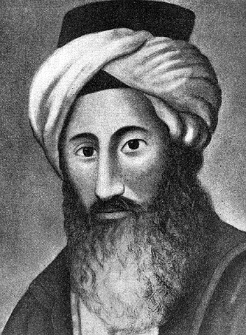

Toen rabbijn Chaim Yosef David Azulai (1724–1806), universeel bekend als de Chida, door Europa reisde als gezant van de Joodse gemeenschap van Hebron, liet hij een van de meest opmerkelijke Joodse reisverslagen van de achttiende eeuw achter. Zijn dagboek, Ma'agal Tov, biedt een zeldzame blik uit de eerste hand op het Joodse leven, de reisomstandigheden en de samenleving in heel Europa.

Onder de vele plaatsen die hij bezocht, waren de steden van de Oostenrijkse Nederlanden — het huidige België — waaronder Brussel, Antwerpen en Mechelen. Zijn waarnemingen leveren waardevol bewijs voor de geschiedenis van het Joodse leven in de regio, decennia voor de oprichting van de moderne Belgische staat.
Aankomst in de Oostenrijkse Nederlanden
Na het verlaten van Frankrijk betrad de Chida de Oostenrijkse Nederlanden en trok door de versterkte stad Bergen (Mons). Hij noteerde de talrijke bewakers, douane-inspecties en militaire vestingwerken die de grensregio's kenmerkten. In tegenstelling tot vele andere grensovergangen die hij had meegemaakt, inspecteerden de autoriteiten zijn paspoort en lieten hem doorgaan zonder zijn bagage te openen.
De reis was vaak moeilijk. Herbergen verschilden sterk in kwaliteit, en de Chida klaagde regelmatig over oneerlijke herbergiers, slechte wegen en onverwachte kosten. Niettemin kreeg hij over het algemeen een gunstige indruk van de lokale bevolking.
Brussel: Een prachtige hoofstad
Op vrijdagmiddag kwam de Chida aan in Brussel. Zijn beschrijving van de stad behoort tot de meest enthousiaste in Ma'agal Tov.
Hij bewonderde de brede straten, elegante gebouwen en indrukwekkende pleinen. Hij beschreef specifiek een groot centraal plein en het paleis van de keizer, omringd door prachtige architectuur. De stad maakte op hem een welvarende en verfijnde indruk.
De Chida noteerde ook dat hij hoorde over de beroemde textiel- en productielustrieën van Brussel, die in heel Europa bekend stonden. Er werd hem verteld over grote werkplaatsen die fijne goederen en vakkundig handwerk produceerden.
Tijdens zijn verblijf in Brussel bezocht hij het huis van Lipman Nathan, een lokale Joodse inwoner die Joodse reizigers hielp die door de stad trokken. De Chida zou hem later tijdens zijn reizen opnieuw tegenkomen.
Joods leven in Antwerpen
Vanuit Brussel vervolgde de Chida zijn weg naar Antwerpen, destijds een belangrijk commercieel centrum binnen de Oostenrijkse Nederlanden.
Zijn verslag biedt een van de vroegste beschrijvingen uit de eerste hand van het Joodse leven in het achttiende-eeuwse Antwerpen. Hoewel de Joodse bevolking nog klein was, was deze duidelijk voldoende georganiseerd om reizigers te helpen en gemeenschappelijke banden te onderhouden.
De Chida bracht de sabbat door in Antwerpen bij een lokale Jood die werd geïdentificeerd als rabbijn Ze'ev (Zelig). Tijdens zijn verblijf vernam hij dat er andere Joodse bezoekers in de stad aanwezig waren. Samen vormden ze een minjan, waardoor de gezamenlijke gebeden konden plaatsvinden.
De Chida noteert:
"We baden ook Mincha en Ma'ariv met een minjan, gezegend zij God."
Deze korte verklaring is historisch belangrijk. Het toont aan dat Antwerpen een voldoende Joodse aanwezigheid had om een quorum voor het gebed bijeen te brengen, een belangrijke indicator voor het gemeenschapsleven.
De Chida sprak tijdens zijn verblijf ook Thora-woorden uit, waardoor wat anders een routinestop had kunnen zijn, veranderde in een betekenisvolle religieuze bijeenkomst.
Nieuwsgierigheid in de straten van Antwerpen
Tijdens zijn verblijf in Antwerpen nam de Chida lokale nieuwsgierigheid waar ten opzichte van buitenlandse Joodse reizigers. Hij noteert dat er ongeveer twintig mensen bijeenkwamen om te kijken en te praten met leden van zijn gezelschap op straat.
Het incident leek eerder nieuwsgierig dan vijandig. Een van de reizigers die de Chida vergezelde, sprak en grapte met de toeschouwers, wat de aandacht trok maar geen ernstige verstoring veroorzaakte.
Deze passage biedt een fascinerende blik op hoe zichtbaar Joodse reizigers werden waargenomen in het achttiende-eeuwse Antwerpen, waar ontmoetingen met bezoekers uit de mediterrane Joodse wereld waarschijnlijk ongewoon waren.
Een vriendelijke gastvrouw
De Chida prees ook de vrouw die de herberg beheerde waar hij in Antwerpen verbleef. Hij beschrijft haar als uitzonderlijk vriendelijk en eervol, en merkt het respect en medeleven op dat zij toonde jegens haar gasten.
Dergelijke opmerkingen zijn relatief zeldzaam in de reisliteratuur van die periode en suggereren dat zijn ervaring in Antwerpen over het algemeen positief was.
Winterwegen en reisproblemen
Terwijl hij zich voorbereidde om zijn reis naar het noorden te vervolgen richting de Republiek der Zeven Verenigde Nederlanden, stuitte de Chida op een bekend obstakel: transport.
Hij probeerde een koets te huren naar Moerdijk, de toegangspoort tot Holland, maar vond de prijzen extreem hoog. Lokale bewoners legden uit dat reizen in de winter berucht moeilijk was. Wegen waren vaak bedekt met modder en water, rivieren konden bevriezen en reizen vereisten spannen van meerdere paarden.
Deze praktische details geven een levendig beeld van het achttiende-eeuwse reizen, en herinneren moderne lezers eraan hoe zwaar zelfs relatief korte reizen konden zijn.
Het incident in Mechelen
Een van de meest bekende episodes uit de reis van de Chida door België vond niet plaats in Antwerpen, zoals soms wordt beweerd, maar in Mechelen.
Na het verlaten van Brussel kwam het gezelschap van de Chida aan in de stad, waar een grote menigte zich om hen heen verzamelde. Hij rapporteert dat honderden niet-Joden zich verzamelden, lachend, roepend en starend naar de reizigers.
De situatie werd gespannen genoeg voor de Chida om deze als gevaarlijk te omschrijven. Hoewel het incident uiteindelijk zonder geweld afliep, liet het duidelijk een diepe indruk op hem achter.
Dit onderscheid is belangrijk. Het eigen verslag van de Chida scheidt de relatief milde nieuwsgierigheid die hij in Antwerpen tegenkwam van de veel grotere en verontrustendere menigte waarmee hij in Mechelen werd geconfronteerd.
Referenties
- Rabbijn Chaim Yosef David Azulai: Ma'agal Tov (HebrewBooks).